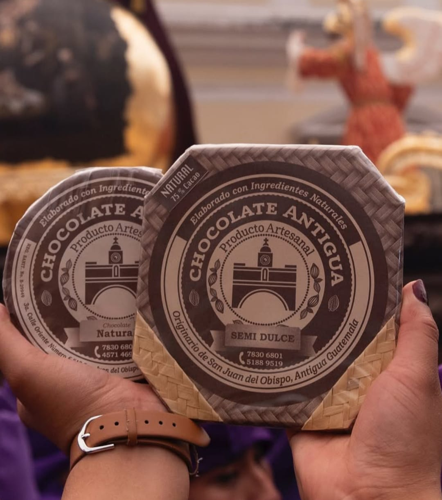

Bienvenidos a Cacao Antigüeño
🔥 Promociones Actuales
¡Solo por este fin de semana! Compra 2 barras de cardamomo y llévate la de menta a mitad de precio.
✨ Productos Nuevos
Atrévete a probar nuestras nuevas Trufas Picantes. Una mezcla perfecta de cacao amargo y chile.

Nuestra Misión y Visión
Misión
Rescatar y compartir los sabores tradicionales de Antigua Guatemala mediante la elaboración de chocolate artesanal de la más alta calidad.
Visión
Ser reconocidos como el emprendimiento líder en la preservación de la cultura del cacao guatemalteco a nivel nacional.